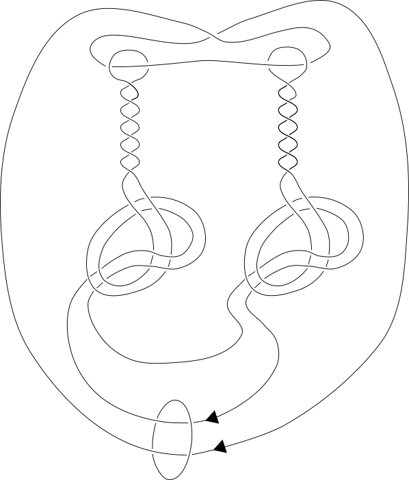
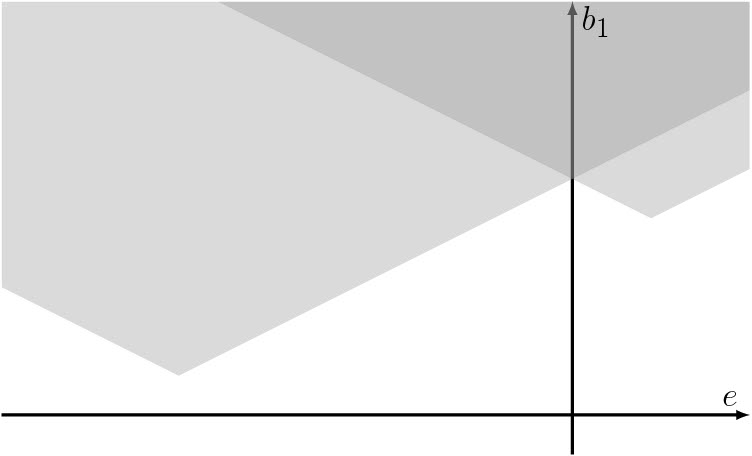
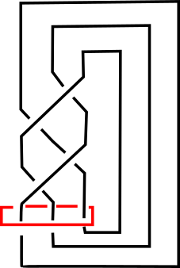
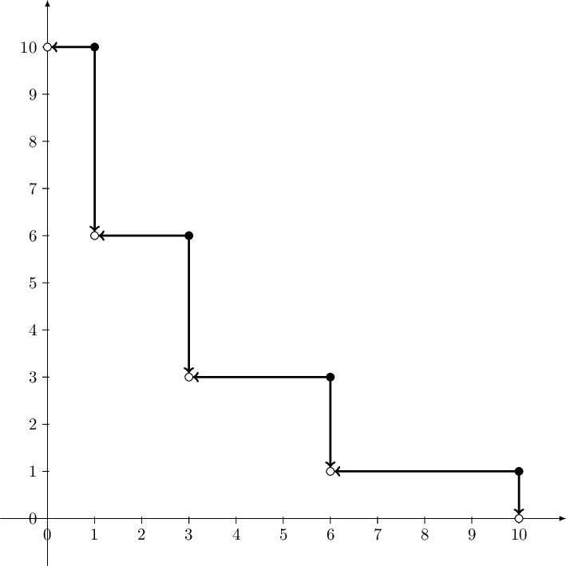
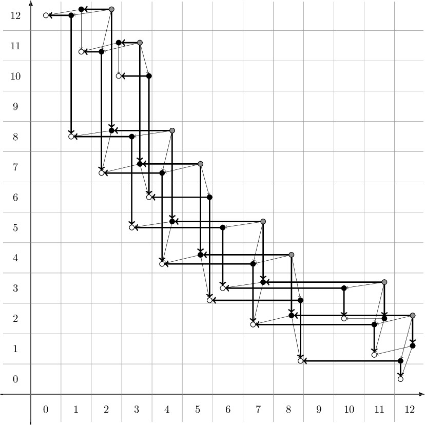

Research Interests
My research interests lie in the field of low-dimensional topology, the study of manifolds in dimensions up to four. More specifically, I study knot theory in dimensions 3 and 4 and I am particularly interested in using knot invariants arising from Heegaard Floer theory to study knot concordance, problems related to unknotting operations, and other knot-theoretic problems.
Put simply, a mathematical knot is a knotted up loop in 3-dimensional space. Two knots are called equivalent if one can be deformed to another via an ambient isotopy (i.e. without breaking the loop or passing in through itself). A knot invariant is a function whose input is a knot and whose output does not change under ambient isotopy. In other words, a knot invariant sends equivalent knots to equivalent outputs. Knot invariants come in many different forms (binary, integer, function, polynomial, group, etc.) and arise in many different ways (diagrammatic, associated manifolds, etc.).
Knots are often considered up to concordance. Concordance is an equivalence relation on the set of knots, and the equivalence classes form a group. Many (but not all) knot invariants are also concordance invariants.
Publications and Preprints

An Upsilon torsion function for knot Floer homology. arXiv.
Heegaard Floer theory produces chain complexes associated to knots. Viewed as modules over polynomial rings, such complexes yield torsion invariants that offer constraints on cobordisms between knots. For instance, Juhasz, Miller and Zemke used torsion invariants to bound the number of local maxima and minima in cobordisms between pairs of knots. Gong and Marengon defined a related torsion invariant and used it to study nonorientable knot cobordisms.
In this paper we define a one parameter family of Heegaard Floer torsion invariants that yields a piecewise linear function defined on the interval [0,2]. We call this the Upsilon torsion function; it is closely related to the Heegaard Floer Upsilon function defined by Ozsvath, Stipsicz and Szabo. In a natural way, this Upsilon torsion function interpolates between the Juhasz-Miller-Zemke invariant and the Gong-Marengon invariant. In addition to bounding the number of local maxima and minima in knot cobordisms, the Upsilon torsion function provides new obstructions related to the Gordian distance between knots.

Do Link Polynomials Detect Causality In Globally Hyperbolic Spacetimes? Joint with undergraduate Jacob H. Swenberg. J. Math. Phys. 62 (2021), no. 3, 032503. arXiv.
Let X be a (2+1)-dimensional globally hyperbolic spacetime with a Cauchy surface whose universal cover is homeomorphic to R^2. We provide empirical evidence suggesting that the Jones polynomial detects causality in X. Specifically, we exhibit an infinite family of links that are distinguished from the connected sum of two Hopf links by their Jones polynomials. We introduce a new invariant of certain tangles related to the Conway polynomial, and suggest that the Conway polynomial does not detect causality in the scenario described by producing an explicit link. The Conway polynomial fails to distinguish this link from the connected sum of two Hopf links.
(The paper above is the result of an undergraduate research project with undergraduate Jacob Swenberg, which I co-mentored with Ina Petkova and Vladimir Chernov.)

Nonorientable surfaces bounded by knots: a geography problem. Submitted for publication. arXiv.
The nonorientable 4-genus is an invariant of knots which has been studied by many authors, including Gilmer and Livingston, Batson, and Ozsvath, Stipsicz, and Szabo. Given a nonorientable surface with boundary a knot, an analysis of the existing methods for bounding and computing the nonorientable 4-genus reveals relationships between the first Betti number and the normal Euler class of the surface. This relationship yields a geography problem: given a knot K, what is the set of realizable pairs (e(F), b_1(F)) where F is a nonorientable surface bounded by K?

Unknotting with a single twist. Joint with Charles Livingston.
Enseign. Math. 66 (2020), no. 3-4, 541–589. arXiv.
Given a knot K in S^3, is it possible to unknot it by performing a single twist, and if so, what are the possible linking numbers of such a twist? We develop obstructions to unknotting using a twist of a specified linking number. The obstructions we describe are built using classical knot invariants, Casson-Gordon invariants, and Heegaard Floer theory.
See two virtual talks on this paper:
- CKVK* virtual seminar, hosted at u.osu.edu/ckvkastrks, October 2020. See my talk here.
- NCNGT Confrence topic group on Knots, surfaces, and 4-manifolds, June 2020, held virtually at ncngt.org. See my talk here.

Concordances from differences of torus knots to L-space knots.
Proc. Amer. Math. Soc. 148 (2020), no.4, 1815-1827. arXiv.
It is known that connected sums of positive torus knots are not concordant to L-space knots. Here we consider differences of torus knots. The main result states that the subgroup of the concordance group generated by two positive torus knots contains no nontrivial L-space knots other than the torus knots themselves. Generalizations to subgroups generated by more than two torus knots are also considered.

Using secondary Upsilon invariants to rule out stable equivalence of knot complexes.
Algebr. Geom. Topol. 20 (2020), no. 1, 29-48. arXiv.
Two Heegaard Floer knot complexes are called stably equivalent if an acyclic complex can be added to each complex to make them filtered chain homotopy equivalent. Hom showed that if two knots are concordant, then their knot complexes are stably equivalent. Invariants of stable equivalence include the concordance invariants tau, epsilon, and Upsilon. Feller and Krcatovich gave a relationship between the Upsilon invariants of torus knots. We use secondary Upsilon invariants defined by Kim and Livingston to show that these relations do not extend to stable equivalence.